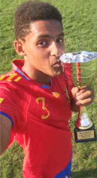

Our History
I & M’s Mini Kicks started the kick-off in 2014 in St. Catharines, Ontario, Canada. Ibrahim Adem immigrated to Canada from the middle east and was shocked to see that many children play inside on their consoles and computers instead of playing outside with their friends. As back in his hometown, almost every child played soccer (widely known as football) until dusk when the streetlights would turn on. Michael Truong recognized this as well, as children do not play outside as much as they used to. With child obesity on the rise Ibrahim and Michael were appalled by the lack of affordable programs to get young children involved in sports and an active lifestyle. So, they set out on a mission to return children to where they belong, outside!
With many years of competitive play and a life-long love for the sport, coaching soccer through personal experiences allow quality learning to our children as to avoid making the same mistakes as they once had. However, not only basic soccer skills will be developed but essential interpersonal skills such as communication, leadership, and teamwork are emphasized as well in which these skills cannot emerge from a monitor.
With a background in Medical Sciences, Michael Truong focused on incorporating physical exercises and nutritious, affordable meal recipes tailored specifically to children into a comprehensive program with the hopes of nurturing healthy choices and habits.
Mini Kicks and its community of Mini Kickers share one common interest: Fun!
Founders
Management - Michael Truong

Michael Truong is a 4th year Medical Sciences student at Brock University and has been interested in exercising, soccer, and overall health since he can remember. His day involves managing the Mini Kicks website, formulating affordable, nutritious recipes, and responding to questions or concerns that people may have regarding the company. This however, does not prevent him from maintaining a healthy mind and body as soccer is his way of relieving stress and honing his soccer skills. His hard work and determination shines on the field as he has been rewarded with the "Most Valuable Player" award for 3 consecutive years back in 2016 during his competitive years.
Michael's specialty is displayed in a defensive position with "sweeper" as his main position.
He believes that a strong defense is also strong offense and would like to pass down that mentality to the younger generations in hopes of deterring various forms of bullying yet encourage everyone to stand their ground.
Coach - Ibrahim Adem
Ibrahim Adem is a 4th year Engineering student at Carlton University and has played soccer throughout his entire life. He enjoys sharing his knowledge and love for the sport by coaching others and learning through training as a means to better himself. As a natural leader, Ibrahim has guided his competitive team to win back-to-back championships against the toughest opponents in the league. His insight of the game reflect how far he has come as a team player from his humble beginnings back in Saudi Arabia.
Ibrahim is capable of playing any soccer position at a competitive level but prefers midfield as main position. As the midfielders' key role is to pass the ball or serve as a bridge between one side of the field to the other.
His philosophy is that sharing and teamwork is essential in connecting with people to achieve a common goal.